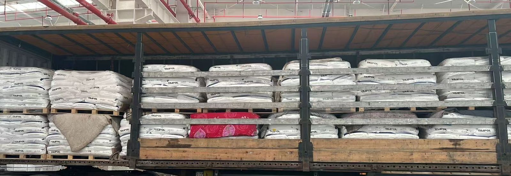

اصطلاحات
انبار به گمرک، نه درب به درب: چین به گمرک غرب تهران با CPT / DAP، نه DDP
بسیاری از استعلامها در این خط، تیر و ترخیص کامل و تحویل درب و عدد روز فشرده را با هم میفروشند. پیش از استعلام، روشن کنید کدام بخش را میخرید. آنچه ما میفروشیم خط مستقیم «انبار به گمرک» چین به ایران است: بار به انبار گمرک غرب تهران تحویل و با قبض انبار واگذار میشود. ترخیص و حقوق ورودی بر عهدهٔ حقالعملکار خریدار در ایران است. نه DDP، نه درب.
- انبار به گمرک؛ ترم تحویل CPT / DAP گمرک تهران؛ نه درب به درب، نه DDP
- تحویل به انبار گمرک غرب تهران (Gomrok Gharb)؛ ترخیص و حقوق ورودی ایران با حقالعملکار رسمی صاحب کالاست — ما ترخیص ایران را انجام نمیدهیم
- زمان حمل از مرز ووچیا محاسبه میشود (در حال حاضر ۲۱ تا ۲۳ روز تا تهران؛ تا مشهد ۱۸ تا ۲۱ روز مستقیم و ۲۴ تا ۲۸ روز با تعویض بار)؛ بخش داخلی چین جداگانه است
- کرایه در صفحه نیست. برای استعلام سه مورد بفرستید: انبار مبدأ؛ گمرک مقصد؛ کد HS / وزن ناخالص کیلوگرم / حجم مترمکعب
کجا تحویل میدهیم: انبار به گمرک، نه درب
مبدأ، انبار تجمیع در چین است: ایوو (سوشی)، شنژن (پینگهو)، گوانگژو (باییون)، شانگهای؛ یا تحویل در محوطهٔ گمرکی مرز خروج. حرکت سهشنبه و جمعه از ایوو و شنژن (پینگهو)؛ کنسول از ۱ مترمکعب یا ۱۰۰ کیلوگرم.
مقصد، انبار گمرکی ایران است. نقطهٔ تحویل اصلی گمرک غرب تهران (Gomrok Gharb) است؛ بندر خشک آپرین و شهریار هم قابل ترتیباند؛ تا گمرک مشهد ۱۸ تا ۲۱ روز مستقیم و ۲۴ تا ۲۸ روز با تعویض بار.
ترم تحویل CPT / DAP گمرک تهران نوشته میشود. انبار به گمرک یعنی ما بخش تا گمرک را تحویل میدهیم؛ مسئول انبار یا درب خریدار نیستیم و ترخیص ایران را انجام نمیدهیم.

CPT/DAP در برابر DDP: چه کسی چه میکند
| مورد | انبار به گمرک ما (CPT/DAP گمرک) | ادعای رایج DDP / ترخیص دوطرفه |
|---|---|---|
| نقطهٔ تحویل | انبار گمرکی مانند گمرک غرب تهران | اغلب انبار یا درب خریدار وعده داده میشود |
| ترخیص و حقوق ورودی ایران | حقالعملکار رسمی خریدار | اغلب ادعا میشود حملکننده انجام میدهد |
| آیا ما ترخیص ایران را انجام میدهیم | خیر | — |
| عدد ترانزیت | از مرز ووچیا، در حال حاضر ۲۱ تا ۲۳ روز تا انبار گمرک غرب تهران (بهعلاوهٔ بخش داخلی چین، جدا) | ادعاهای فشردهٔ درببهدرب (بهعنوان عدد تأییدشده تلقی نکنید) |
جدول فقط برای ترسیم مرز است. عدد روز طرف دیگر را در نرخ ما کپی نکنید.
هنگام ورود: قبض انبار به چه کسی داده میشود
پس از تخلیهٔ بار در انبار گمرکی، بار با قبض انبار (Ghabz-e Anbar / قبض انبار) به حقالعملکار منتخب صاحب کالا واگذار میشود که سپس حقوق ورودی را میپردازد و ترخیص میگیرد. سامانهٔ گمرک ایران ASYCUDA است — فقط اشاره، نه آموزش ترخیص.
سه چیز را باید تأیید کنید: بار به کدام انبار گمرکی میرسد، چه کسی قبض انبار را صادر میکند، و چه کسی ترخیص را انجام میدهد. سرویس انبار به گمرک به دو مورد اول پاسخ میدهد؛ مورد سوم سمت خریدار است.
عدد روز فقط یک بخش را پوشش میدهد
زمان حمل از مرز ووچیا محاسبه میشود: در حال حاضر ۲۱ تا ۲۳ روز تا انبار گمرک غرب تهران؛ تا مشهد ۱۸ تا ۲۱ روز مستقیم و ۲۴ تا ۲۸ روز با تعویض بار. بخش داخلی چین (معمولاً ظرف ۷ روز) جدا محاسبه میشود. نه درب، نه DDP، نه دریایی.
کارنهٔ TIR یعنی پلمپ گمرکی در مبدأ و یک کارنه؛ باز شدن و تعویض کامیون کمتر در مسیر — کمتر، نه هیچ. TIR ترانزیت را کوتاه نمیکند و کرایه را کاهش نمیدهد.
خروج و ورود
دو خط فعال است: خط ووچیا از قرقیزستان و سپس ازبکستان، و خط خورگوس از قزاقستان و سپس ازبکستان. هر دو از ترکمنستان میگذرند و از سرخس وارد ایران میشوند. تورقارت و آلاشانکو فعال نیستند.
پانویس: خط ووچیا (قرقیزستان) یک مالیات ۰٫۴ درصدی ارزش فاکتور دارد — مالیات است نه کرایه و جداگانه صورتحساب میشود؛ خط خورگوس آن را اضافه نمیکند. راهآهن چین–قرقیزستان–ازبکستان در حال ساخت و باز نشده است؛ بار ایران همچنان جادهای است.
استعلام فقط سه مورد لازم دارد
- انبار مبدأ (ایوو / شنژن پینگهو / گوانگژو / شانگهای، یا محوطهٔ گمرکی خورگوس)
- گمرک مقصد (گمرک غرب تهران / آپرین / مشهد)
- کد تعرفهٔ HS، وزن ناخالص به کیلوگرم، حجم به مترمکعب
کرایه در صفحه نیست. برای استعلام سه مورد را بفرستید: انبار مبدأ؛ گمرک مقصد (گمرک غرب تهران / آپرین / مشهد)؛ مشخصات کالا — کد تعرفهٔ HS، وزن ناخالص کیلوگرم، حجم مترمکعب.
sales@chinairantrucks.com · WhatsApp +86 132 3740 1856 · Telegram @Aliboby88
پرسشهای متداول
آیا DDP یا تحویل درب با ترخیص دوطرفه انجام میدهید؟
خیر. ما انبار به گمرک با ترم CPT / DAP گمرک تهران کار میکنیم. بار به انبار گمرکی مانند گمرک غرب تهران تحویل میشود و ترخیص و حقوق ورودی ایران با حقالعملکار رسمی خریدار است.
چه کسی ترخیص میکند؟
حقالعملکار رسمی خریدار، در گمرک مقصد. ما ترخیص ایران را انجام نمیدهیم.
زمان حمل کجا تمام میشود؟
در انبار گمرک غرب تهران. زمان حمل از مرز ووچیا محاسبه میشود و در حال حاضر ۲۱ تا ۲۳ روز تا تهران است؛ تا مشهد ۱۸ تا ۲۱ روز مستقیم و ۲۴ تا ۲۸ روز با تعویض بار. بخش داخلی چین جداگانه است. نه درب.
هنگام ورود چه سندی میگیریم؟
قبض انبار (Ghabz-e Anbar) که به حقالعملکار منتخب صاحب کالا داده میشود تا اظهار و ترخیص را ادامه دهد.
آیا TIR سریعتر یا ارزانتر است؟
کارنهٔ TIR یعنی باز شدن و تعویض کامیون کمتر در مسیر — کمتر، نه هیچ. ترانزیت را کوتاه نمیکند و کرایه را کاهش نمیدهد.
تا مشهد چند روز است؟
تا مشهد ۱۸ تا ۲۱ روز مستقیم و ۲۴ تا ۲۸ روز با تعویض بار (از مرز ووچیا محاسبه میشود)؛ کرایهٔ هر محموله همچنان استعلامی است.
مرتبط: ۲۱ تا ۲۳ روز از ووچیا تا تهران · انتخاب حقالعملکار گمرکی در ایران · کارنه تیر در کریدور چین–ایران · استعلام کرایهٔ حمل چین به ایران · پس از رسیدن به گمرک غرب تهران